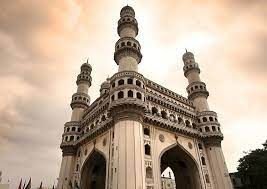
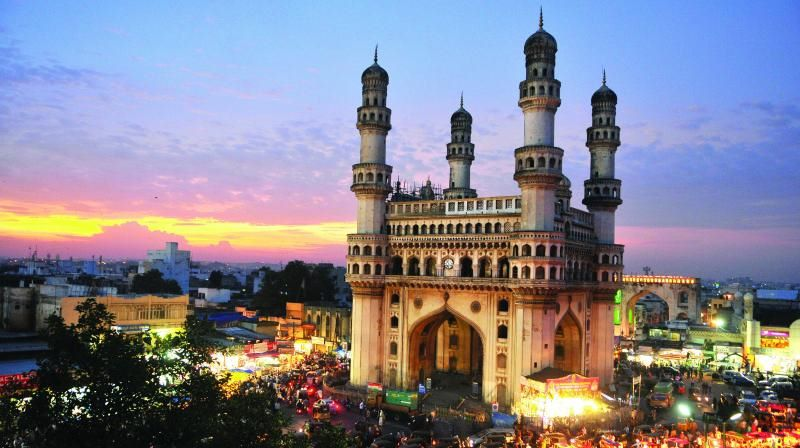

CHARMINAR

Charminar was built by Sultan Mohammed Quli Qutb Shah in 1591. It is said that this square shaped structure with four pillars and intricate carvings was built in honour of his wife, Bhagmati. However, the actual reason behind building Charminar is still not clear.
As per a popular belief, Charminar was built to acknowledge the elimination of the plague which had affected the entire city immensely during that
It is believed that the Sultan had prayed for the end of this plague with which his people were suffering. Hence, as the plague ended, he built the charminar as a tribute to Allah. The four pillars are also said to be dedicated to the first four caliphs of Islam.
It is also said that it was built in the memory of Prophet Muhammed’s son in law who lost his life at the battle of Karbala as its design is in the shape of Shiya Tazias. Some also believe that the location of Charminar is the place where Sultan had seen his then future wife Bahgmati for the first time.
As per a French traveller, Jean de Thévenot who travelled in the 17th century, the reason for its construction is entirely different. According to his narration which is in sync with the Persian texts as well, Charminar was built to commemorate the start of the second Islamic millennium.
The inscription on the foundation stone is translated as ‘Fill this my city with people as, Thou hast filled the river with fishes, O Lord.’ This also indicates that the monument was built to mark the city’s foundation as well. As per the historian Historian Mohammed Safiullah, Charminar was built as an epicenter of Hyderabad.
The construction began in 1589 and was completed in two years with a cost of Rs. 9 lakhs, which was around 2 lakhs huns/gold coins in those times. It is said to weigh around 14000 tonnes with a minimum of 30 feet deep foundation. In 1670, a minaret had fallen down after being struck by lightning.
It was then repaired at a cost of around Rs.58000 then. In 1820, some part of it was renovated by Sikandar Jah at a cost of Rs. 2 lakhs.
There is another legend associated with the Charminar according to which, there is a secret underground tunnel that connects Charminar to the Golconda Fort. It was built for the royal family, to escape in case of any kind of emergencies. However, till date no tunnel could be found.
Architecture of Charminar
An Iranian architect Mir Momin Astrawadi, who had settled in Hyderabad, designed Charminar. It presents an imposing structure which has clearly withstood the test of time. It is a square shaped monument with four pillars, one on each side. The architectural design of Charminar is inspired from the Shia “tazias”. These Tazias were built in the memory of Hussain, who was the son in law of Prophet Muhhamed and had lost his life in the battle of Karbala.
The square shape of the monument measures 20 meters on each side. Each side of the monument is 11 meter wide and overlooks the four prominent thoroughfares. Charminar has been built with granite and lime mortar.

How to reach:

By Air
The nearest airport is in hyderabad

By Train
The nearest railways is in hyderabad

By Road
Charminar, the most famous tourist destination in Hyderabad, can be used as a landmark. A bus,cab,local rickshaw can also be taken to reach the capital.